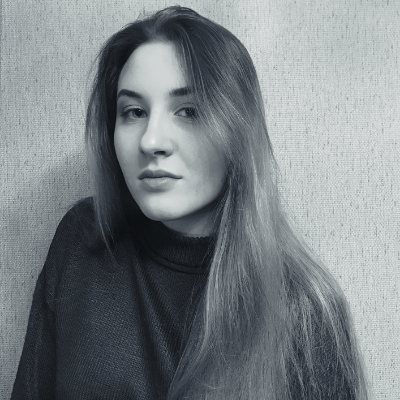

Victoria Gabrielchik
Student
Objective: To become a web-developer
SUMMARY
The main priorities is mastering a new profession as a frontend developer. In order to achieve success in this sphere I practice writing a code every day, read various articles and watch webinars.
I improve my knowledge daily because it matters to me to do my job efficiently, use the latest technologies and developments. I am studying at the Belarusian state University of Informatics and Radioelectronics as a software engineer because I want to connect my life with IT.
- Emotional stability
- Persistence
- Ability to work in a team
- Responsibility
SKILLS
- knowledge of programming languages C++, JAVA SE
- knowledge of systems, technologies and standards for analysis, design and modeling (IDEF, UML, CASE-systems AllFusion Process Modeler (BpWin), AllFusion Data Modeler (ErWin), Enterprise Architect)
- knowledge of databases, DBMS and SQL language
- intermediate English level
EXPERIENCE
- Course project on C++ “Automated cargo accounting system”
- Course project on C++ “The reception in the hospital”
- Course project on C++, client-server application “Automated fleet management system”
EDUCATION
- student of BSUIR
- has attended the course Java Programming Language from IBA Institute
- Yandex practicum: web developer
ENGLISH
- Completed a course in technical English at the University.
- Graduated from the English language course at A2++ level.
- At the moment I am studying on Streamline courses to upgrade to B2 level.